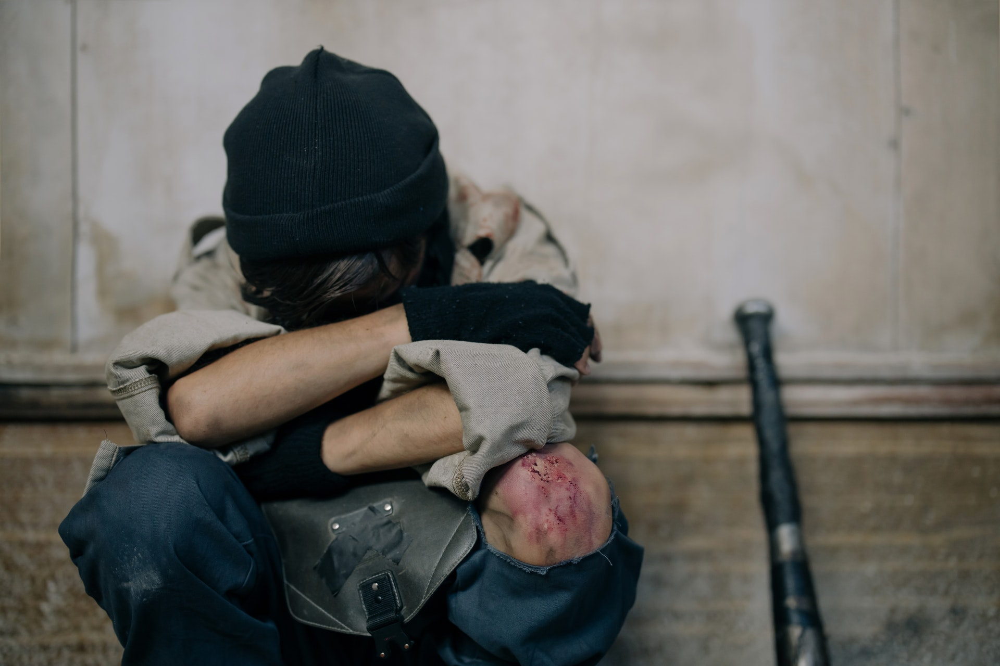

Luis Fernando Verissimo é um escritor, humorista, cartunista, tradutor, roteirista de televisão, autor de teatro e romancista brasileiro. Já foi publicitário e revisor de jornal. É ainda músico, tendo tocado saxofone em alguns conjuntos. Com mais de 80 titulos publicados, é um dos mais populares escritores brasileiros comteporâneos.
Luiz Fernando Veríssimo
O homem acorda da anestesia e olha em volta. Ainda está na sala de recuperação. Há uma enfermeira do seu lado. Ele pergunta se foi tudo bem.
– Tudo perfeito – diz a enfermeira, sorrindo.
– Eu estava com medo desta operação…
– Por quê? Não havia risco nenhum.
– Comigo, sempre há risco. Minha vida tem sido uma série de enganos…
E conta que os enganos começaram com seu nascimento. Houve uma troca de bebês no berçário e ele foi criado até os dez anos por um casal de orientais, que nunca entenderam o fato de terem um filho claro com olhos redondos. Descoberto o erro, ele fora viver com seus verdadeiros pais. Ou com sua verdadeira mãe, pois o pai abandonara a mulher depois que esta não soubera explicar o nascimento de um bebê chinês.
– E o meu nome? Outro engano.
– Seu nome não é Lírio?
– Era para ser Lauro. Se enganaram no cartório e…
Os enganos se sucediam. Na escola, vivia recebendo castigo pelo que não fazia. Fizera o vestibular com sucesso, mas não conseguira entrar na universidade. O computador se enganara, seu nome não apareceu na lista.
– Há anos que a minha conta do telefone vem com cifras incríveis. No mês passado tive que pagar mais de R$ 3 mil.
– O senhor não faz chamadas interurbanas?
– Eu não tenho telefone!
Conhecera sua mulher por engano. Ela o confundira com outro. Não foram felizes.
– Por quê?
– Ela me enganava.
Fora preso por engano. Várias vezes. Recebia intimações para pagar dívidas que não fazia. Até tivera uma breve, louca alegria, quando ouvira o médico dizer:
– O senhor está desenganado.
Mas também fora um engano do médico. Não era tão grave assim. Uma simples apendicite.
– Se você diz que a operação foi bem…
A enfermeira parou de sorrir.
– Apendicite? – perguntou, hesitante.
– É. A operação era para tirar o apêndice.
– Não era para trocar de sexo?